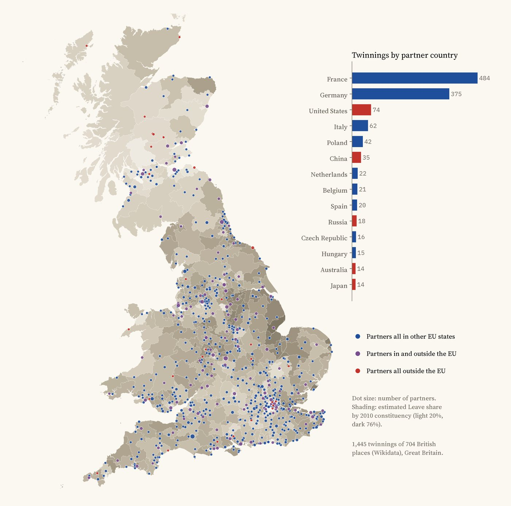
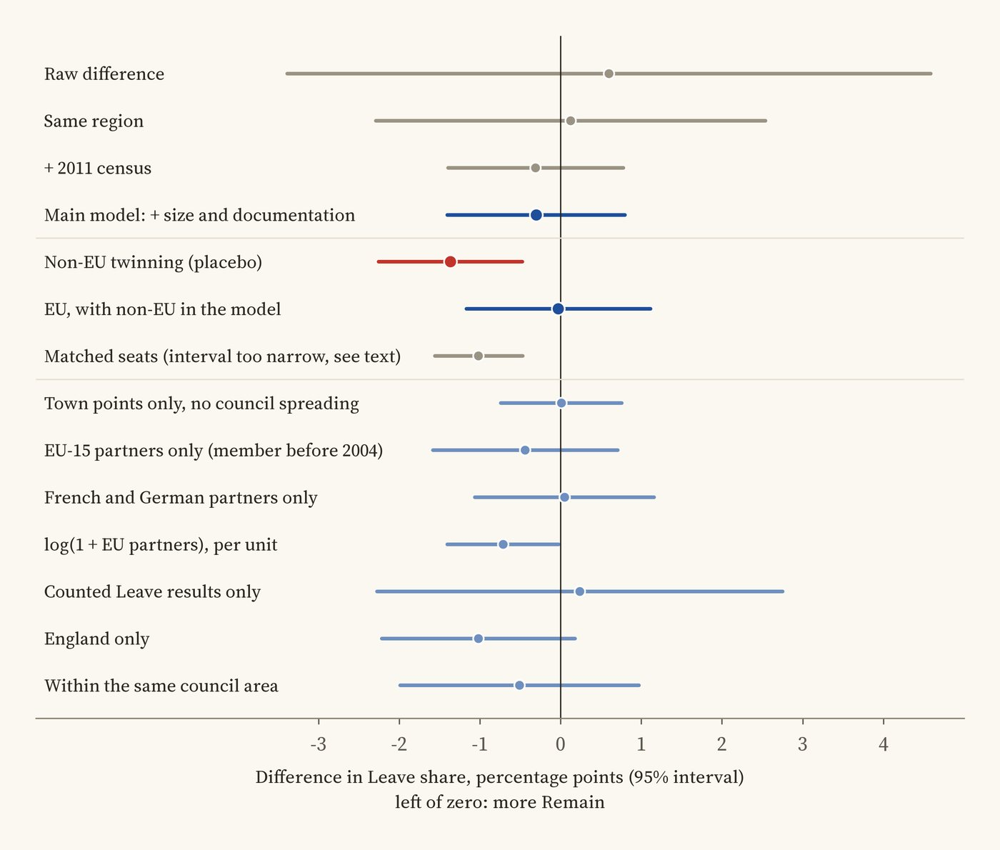
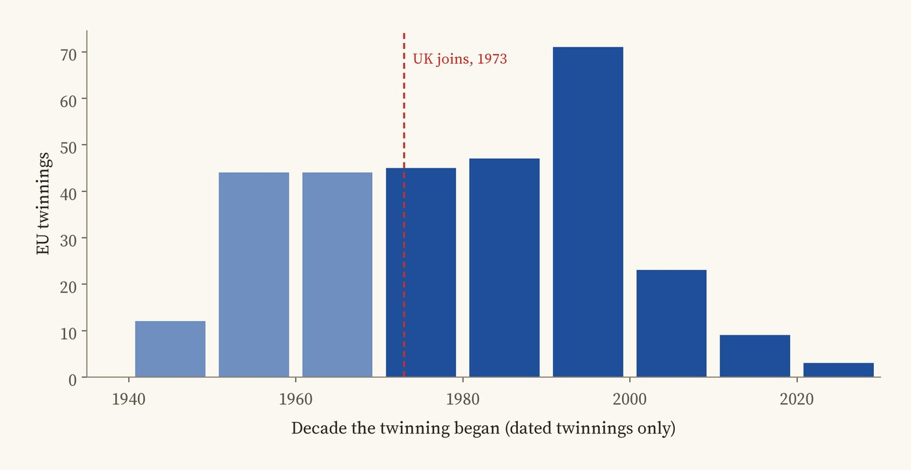
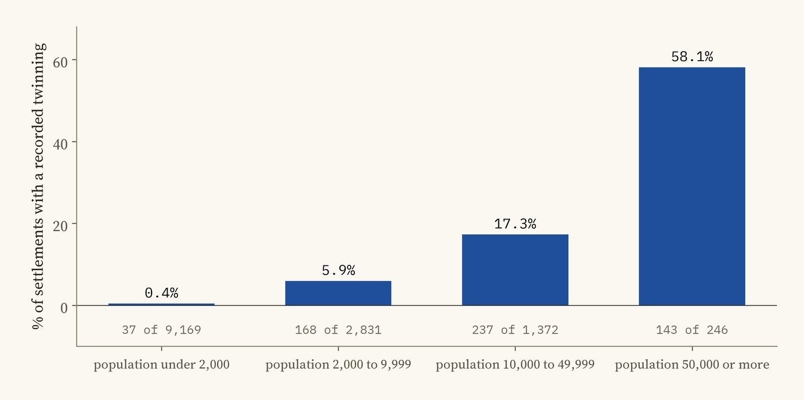

Every twinning of a British town or council recorded in Wikidata, over the estimated 2016 Leave vote in each constituency of Great Britain. Tap a dot or a seat.
Drive into almost any British town and a sign will tell you who it is twinned with: a French market town, a German city, sometimes a place in Poland or Italy. Most of these links were made in the decades after the Second World War to help former enemies become friends, and later to bring Europe closer to home. So when Britain voted to leave the European Union in 2016, did the places with European twins vote Remain?
I took every twinning of a British place recorded in Wikidata, 1,445 of them, placed each in its constituency, and compared the estimated Leave vote of seats with and without a European twin, taking account of the things that are known to predict the vote: age, education, jobs, ethnicity, how built up a place is, and how big and well documented its towns are.
British twinning is overwhelmingly a European habit. Of the 1,445 recorded twinnings, 484 are with places in France and 375 with places in Germany, 59% of the total. Then come the United States (74), Italy (62), Poland (42) and China (35). Coventry, twinned with Stalingrad (now Volgograd) since 1944, has 25 partners, more than any other place in the data.

Twinned places by the kind of partner, over the Leave vote. Bars: twinnings by partner country.
Because many twinnings are made by a whole council (a city like Leeds or a district like Wakefield), a twinning counts for every seat that lies mostly inside that council's area. On that rule 566 of the 632 seats in Great Britain have at least one EU twin; only 66 have none.
Before controls, seats with an EU twin voted Leave by 0.6 points more than seats without, a difference too small to tell from zero. The 66 seats without one are a mixed group, from London suburbs such as Putney and Wimbledon to the Highlands. Comparing seats in the same region with the same age, education, jobs, ethnicity and density, and with towns of the same size and number, the difference is -0.3 points (95% range -1.4 to 0.8). In plain words: no detectable Remain bonus. The range rules out a Remain bonus bigger than about 1.4 points, though it cannot rule out one of about 1 point.

The main estimate, the placebo and the checks, with 95% ranges. Left of zero means more Remain.
I wrote the test down before running it, with a placebo: twinnings with places outside the EU, in the United States, China, Russia, Japan or the Commonwealth. If twinning with Europe made people feel more European, only the European twins should matter. The pattern turned up among the placebo instead. Seats twinned outside the EU voted 1.4 points more Remain (95% range 0.5 to 2.3 points), and adding them to the model leaves the EU twins at 0.0. Places that reach out to the wider world lean a little to Remain, and their largest towns tend to be bigger (a median of 38,448 people against 30,984); places twinned with Europe in particular do not.
That non-EU pattern holds when any one region is left out and in England alone, but it disappears when seats are compared only within the same council area and among the seats with counted results, so treat it as a clue about the kind of place that twins, not a finding.
Most of the planned checks find no European effect. Counting only twinnings made by a town itself, not a whole council, gives 0.0; only partners in the older member states, -0.4; only French and German partners, 0.0; only the 128 seats where the Leave vote was counted ward by ward rather than estimated, 0.2. Two checks that count the number of EU partners rather than whether there is one lean slightly towards Remain, just past the usual bar, but they fade once non-EU partners are counted too. A matched comparison of each EU-twinned seat with its most similar untwinned seat gives -1.0 points, but it leans on only 58 untwinned seats, and when the matching also holds non-EU twinning fixed it shrinks to -0.3.
Only 26% of EU twinnings have a start date in Wikidata. Of those, 109 began before Britain joined the European Community in 1973 and 189 after. Seats whose first dated EU twin is older than 1973 voted much like those whose first twin came later (-0.3 points, 95% range -1.9 to 1.4).

When the dated EU twinnings began.
Twinnings. Wikidata's "twinned administrative body" statements on places in the United Kingdom. Partners were placed in their present country, and countries in the EU on referendum day count as EU. 13 school links, 17 places outside Great Britain and 12 county or regional links were left out of the main count. The lines on the map run from each British place to its partner's own point in Wikidata; 1,444 of the 1,445 twinnings have one.
Votes and people. Leave estimates for each 2010 constituency by Chris Hanretty, and the 2011 census. The models compare seats in the same region, with errors that allow seats in one council area to be alike.

Share of places with a recorded twinning, by population.
What this cannot say. Wikidata records twinnings unevenly: 58% of towns of 50,000 or more have one recorded, but under 1% of villages, and some councils' links are missing or out of date. A missing record means not recorded, not no twinning. Most twinnings are run by small committees of enthusiasts, so a seat having one says little about how many residents ever took part. And this compares places, not people: it cannot say whether twinning changed anyone's mind.